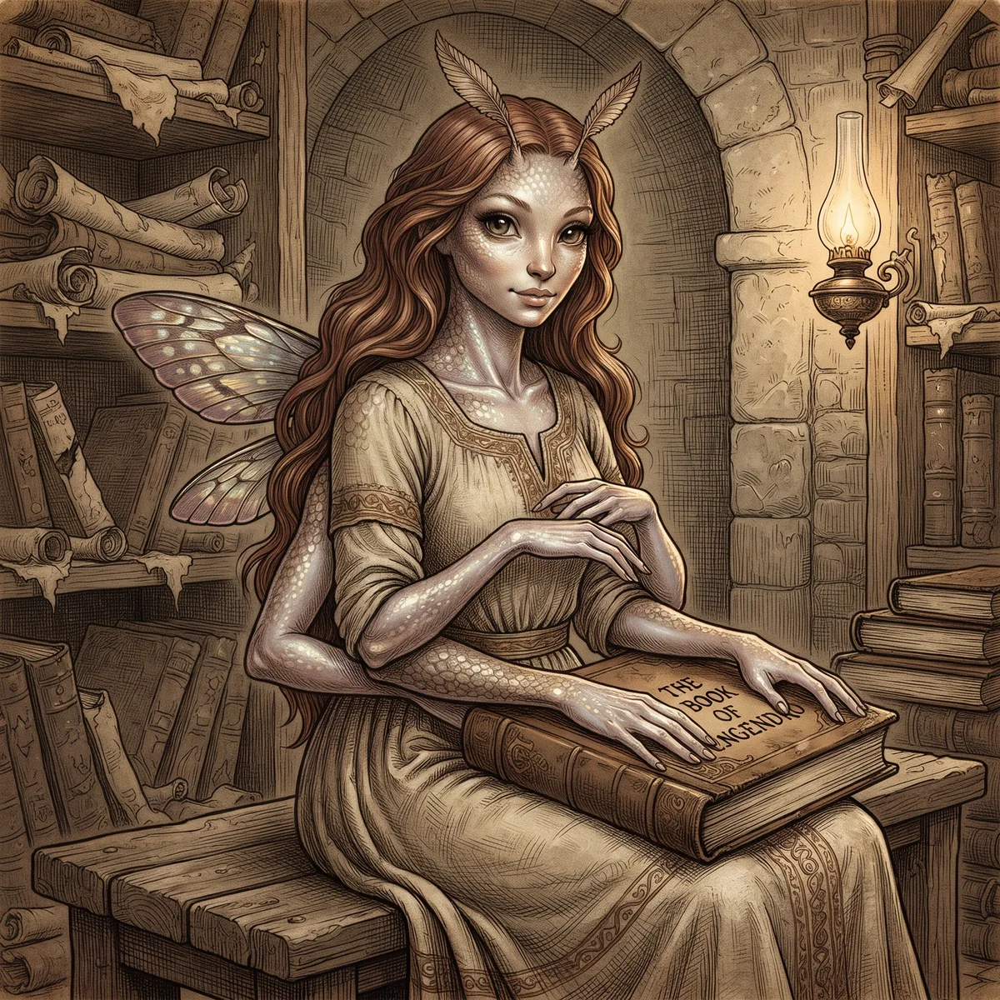

Engendro
LibreLos Engendros son criaturas que, con el paso de los siglos, han perdido la pureza y la identidad de sus antiguas razas. Durante mucho tiempo no fueron considerados una raza como tal, pero con el tiempo formaron sus propias sociedades y asentamientos, hasta ser reconocidos como una raza más.
Son seres raros y exóticos, sin destacar especialmente en ningún ámbito. Siguen las mismas reglas que las demás razas, pero no reciben bonos en dados ni poderes especiales de inicio.
Apariencia
En los Engendros no existen límites físicos. Su aspecto queda completamente a la imaginación: pueden ser una diminuta hada, tener tres brazos, mezclar diferentes rasgos o presentar cualquier otra forma que encaje con el mundo.

Libertad total de diseño morfológico, con bonificación +2 de Engaño.